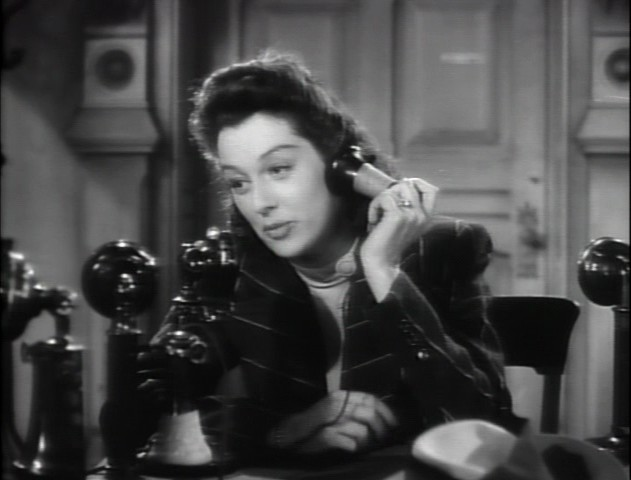

His Girl Friday, frame at 50:02
Howard Hawks · 1940 · Film, black and white (frame)
Free to use
Multi-track sound recording did not yet exist, so for the overlapping dialogue the sound mixer switched the overhead microphones on and off as often as 35 times in a scene. Rosalind Russell hired her own writer to add lines and slipped them in as ad-libs. Filming ran from 27 September to 21 November 1939, seven days over schedule. The copyright was not renewed, and the film entered the public domain in 1969.